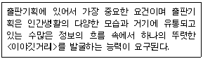
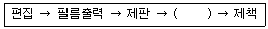
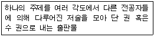
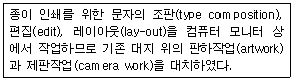
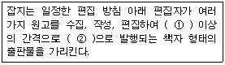
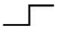

전자출판기능사 (2008-10-05 기출문제)
1과목: 출판론
1. 제책 공정 중 한 책 분량의 페이지가 순서대로 이어지도록 한 묶음씩 합치는 과정을 무엇이라고 하는가?
- 접기(folding)
- 쪽맞추기(gathering)
- 면지붙이기(end paper)
- 라운딩(rounding)
(정답률: 70%)

2. 다음 출판기획의 요건 중 적시성(適時性)에 해당하는 것은?
- 기획 아이디어를 어떻게, 어떤 대상에 적용할 것인가를 판단한다.
- 시대 변화에 민감해야 하고 독자의 의식 변화를 예견한다.
- 문화적 배경에 근거하여 독자들이 공감할 수 있도록 고안한다.
- 시간과 공간을 뛰어넘어 확대 이용이 가능한 연속적인 파급 효과에 중점을 둔다.
(정답률: 60%)
3. 출판에 있어서 ISSN(International Standard Serial Number)이란 무엇인가?
- 국제표준 연속간행물 번호
- 국제표준 저작권 번호
- 국제표준 도서식별 번호
- 국제표준 도서관 번호
(정답률: 67%)
4. 인쇄 잉크의 특성 중에 택(tack)이 강하면 종이의 뜯김 현상이 일어난다. 다음 중 종이의 뜯김 현상과 가장 관계 깊은 것은?
- 인열강도
- 내절강도
- 표면강도
- 인장강도
(정답률: 53%)
5. 인쇄기를 압력을 가하는 방식에 따라 분류할 때 해당되지 않는 것은?
- 평압식
- 윤전식
- 원압식
- 오프셋식
(정답률: 79%)
6. 감압지를 이용하여 앞쪽의 종이에 쓰인 내용이 필기의 압력에 의하여 아래쪽 종이에 복사되도록 하는 인쇄 방식은?
- 전사인쇄
- 카본인쇄
- 평압인쇄
- 라벨인쇄
(정답률: 57%)
7. 판매시점 정보관리시스템이라고 하며, 서점 매장에서 재고 및 판매 관리에 이용하는 정보관리 시스템은?
- EDI
- WAN
- POS
- ISBN
(정답률: 89%)
8. 알루미늄판에 모랫발을 세워서 양극산화로 표면을 처리 후 감광액을 도포한 판은?
- 와이프온판
- 난백판
- PVA판
- PS판
(정답률: 59%)
9. 다음은 출판기획의 어떠한 요건에 대한 설명인가?

- 창의성
- 적의성
- 적시성
- 채산성
(정답률: 63%)
10. 다음은 종이책 제작 과정을 순서대로 나타낸 것이다. ( ) 안에 들어 갈 공정으로 옳은 것은?

- 인쇄
- 촬영
- 프린트 교정
- 저술
(정답률: 80%)
11. 먼셀표색계에서 10색상을 기본으로 할 때 5R은 빨강이 그렇다면 10R은 무슨 색에 가장 가까운가?
- 자주
- 주황
- 연지.
- 다홍
(정답률: 48%)
12. 망점의 크기가 같고, 깊이가 다른 오목점으로 농담을 나타내는 그라비어인쇄의 제판방식은?
- 컨벤셔널 그라비어
- 델젠 그라비어
- 망점 그라비어
- 하드도트 그라이버
(정답률: 32%)
13. 어떤 하나의 색상에서 무채색의 포함량이 가장 적은 색을 무엇이라 하는가?
- 순색
- 보색
- 유채색
- 혼색
(정답률: 75%)
14. 둥글림을 한 속장의 책등 모양을 가지런히 하여 귀를 내는 작업을 무엇이라고 하는가?
- 배킹(backing)
- 쪽맞추기(gathering)
- 등굳힘(gluing)
- 고르기(pressing)
(정답률: 65%)
15. 컬러 인쇄용의 각 색판을 망점 촬영할 때 스크린 각도를 바꾸지 않으면 주로 발생하는 사고는?
- 무아레
- 더블링
- 슬러
- 미스팅
(정답률: 77%)
16. 아닐린인쇄라고 하는데, 주로 골판지, 종이백, 포장 인쇄분야에서 널리 사영되고 있으며, 환경오염이 적은 인쇄 방식은?
- 그라비어 인쇄
- 플렉소그래피 인쇄
- 스크린 인쇄
- 드라이 오프셋 인쇄
(정답률: 73%)
17. 서점관리에 있어서 반품 조건부 위탁판매제도에 관한 설명으로 적합하지 않은 것은?
- 서점은 자기비용으로 광고 선전을 하지 않는다.
- 서점은 위탁받은 출판물에 대한 위험 부담이 없어 적극적으로 판매를 한다.
- 반품 조건부라는 거래조건으로 인해 위탁 기간이 오래된 중고도서도 회수 요구시 회수할 수밖에 없다.
- 서점의 전시공간이 부족하고 반품이 자유롭다는 거래조건 때문에 안 팔리는 도서를 빨리 반품시킨다.
(정답률: 50%)
18. 다음에서 설명하는 출판매체는 무엇인가?

- 단행본(單行本)
- 문고본(文庫本)
- 전집(全集)
- 총서(叢書)
(정답률: 73%)
19. 기획자가 출판기획서 작성시 포함하여야 할 내용으로 가장 거리가 먼 것은?
- 기획 취지
- 보급 대상
- 판매 전략
- 편집 디자인의 세부구성
(정답률: 88%)
20. 다음 인쇄방식 중 일반적으로 잉크의 피막 두께가 가장 얇은 것은?
- 오프셋 인쇄
- 볼록판 인쇄
- 그라비어 인쇄
- 스크린 인쇄
(정답률: 26%)
2과목: 전자 출판
21. 한 시점을 겨냥하여 선풍적인 바람몰이 식의 보급성과를 기대하는 출판기획 모형은?
- 베스트 셀러(best seller)
- 패스트 셀러(fast seller)
- 스테디 셀러(steady seller)
- 밀리언 셀러(million seller)
(정답률: 78%)
22. 전자출판물의 제작 과정을 기획, 개발, 생산 단계로 구분할 때 개발 단계에 해당되지 않는 것은?
- 내용의 재구성과 스토리보드의 작성
- 오브젝트의 수집, 제작 및 인터페이스의 구성
- 프로그래밍 작업과 실행 테스트 및 수정
- 마스터 페이퍼의 제작과 출판물 제작의 타당성 검토
(정답률: 46%)
23. 다음 중 전자책 문서 표준이 아닌 것은?
- JepaX
- OEB PS
- EBKS
(정답률: 48%)
24. 편집 작업에서 글줄을 정렬하는 일반적인 방법이 아닌 것은?
- 왼쪽정렬
- 가운데정렬
- 강제세로정렬
- 강제양끝정렬
(정답률: 65%)
25. 문서 레이아웃 형태를 온라인으로 전산 편집하여 디자이너 간에 주고받으면서 디자인을 개발하거나, 각종 인쇄물을 전달하기 어려운 상황에서 온라인으로 인쇄 품질을 떨어뜨리지 않고 문서를 전달하고자 할 때 사용하는 파일은?
- XML
- FTP
- HTML
(정답률: 71%)
26. 출판 행위를 크게 3개 분야로 나눌 때 해당되지 않는 것은?
- 인쇄와 색처리
- 기획 또는 원고의 선택
- 편집 및 제작
- 책의 보급과 유통
(정답률: 49%)
27. 다음 중 전자출판물에 가장 가까운 것은?
- 백과사전을 DVD로 만든 것
- 디스크 책의 외형을 갖춘 완전한 게임소프트웨어
- 문자정보와 검색기능이 없는 음악 CD
- 비디오로 제작된 영화를 원형 그대로 VCD로 제작한 것
(정답률: 79%)
28. 다음 용어 중 나머지 셋과 성격이 다른 것은?
- Disk Book CAP
- Digital media based CAP
- Screen Book CAP
- Paper Book CAP
(정답률: 80%)
29. 노드에 의한 링크의 형태 중 트리 구조를 갖는 것으로서 일반적으로 출판물 목차의 기능을 가지고 있으며, 상위 계층으로 갈수록 노드의 선택 폭이 좁은 것이 특징인 것은?
- 순차적 링크(liner hyperlink)
- 계층적 링크(hierarchical hyperlink)
- 격자형 링크(grid hyperlink)
- 구조적 링크(structured hyperlink)
(정답률: 72%)
30. 다음 중 전자책 제작용 소프트웨어로 사용할 수 없는 것은?
- 플래시
- 엑셀
- 드림위버
- 나모에디터
(정답률: 70%)
31. 이미지의 화상 처리 및 기록 방식 중 래스터(raster) 방식에 대한 설명으로 옳은 것은?
- 이미지 구성이 선, 곡선, 원 또는 다각형에 의하여 처리되는 방식이다.
- 이미지를 확대할 경우 정교성이 떨어진다.
- 주로 CAD, illustration 관련 소프트웨어들에 의해 채택되고 있다.
- 처리속도가 늦어 애니메이션에는 적합하지 않다.
(정답률: 36%)
32. 다음에서 설명하고 있는 전자출판의 유형은?

- CD-ROM 출판
- 패키지형 출판
- DTP 출판
- 온라인 출판
(정답률: 63%)
33. HTML의 미약한 기능을 보완하고, SGML의 복잡한 구조를 단순화시킨 것으로, HTML과 마찬가지로 웹상에서 문서를 전송하도록 설계된 국제 표준 텍스트 형식은?
- L-HTML
- XML
- JAVA
(정답률: 76%)
34. 사전류나 장서류 등의 페이지수가 많은 출판물에 가장 적합한 제책 방식은?
- 양장
- 호부장
- 중철
- 스프링
(정답률: 85%)
35. 일반적인 드럼 스캐너에 대한 설명으로 옳지 않은 것은?
- 대부분 RGB 필터를 통과한 빛을 투과시키거나 반사시켜 CCD 센서를 통해 빛의 색상 값을 인식하는 구조이다.
- 스캐너가 읽어 들인 값을 CMYK 색상 값으로 변환해 눈으로 볼 수 있는 디지털이미지 형태로 재현시킨다.
- 해상도가 우수하며 사진 원고를 거의 그대로 재현한다.
- 실린더 바깥쪽에 사진 원고를 붙여 실린더를 회전시키면 입력 헤드가 동시에 움직여 원고를 읽어 들이는 방식이다.
(정답률: 45%)
36. 다음 중 전산편집 작업에 주로 사용하는 프로그램은?
- 쿽익스프레스
- 드림위버
- 프론트페이지
- 파워포인트
(정답률: 95%)
37. PDF 파일로 만든 자료를 보기 위해 반드시 필요한 프로그램은?
- DREAMWEAVER
- FLASH
- ACROBAT READER
- 3D MAX
(정답률: 67%)
38. 다음 중 인터넷의 정보표현 언어가 아닌 것은?
- HTML
- JAVA
- LINUX
- XML
(정답률: 61%)
39. 소프트웨어 개발시 검사과정을 일컫는 말로서, 전자출판물이나 컴퓨터 서적 편집시에 활용되는 베타테스트(Beta test)란 무엇인가?
- 사용자들과 유사한 외부 인력을 선정하여 테스트하는 과정
- 개발이 완성된 후 사내에서 시험 테스트하는 과정
- 개발하기 전에 미리 설계하고 테스트하는 과정
- 개발을 진행하면서 이상 유무를 확인하는 과정
(정답률: 54%)
40. 전자출판시스템의 작업순서를 옳게 나타낸 것은?
- 문자입력→OPI서버→립→편집→이미지 센터→현상기
- 문자입력→립→이미지 세터→OPI서버→편집→현상기
- 문자입력→OPI서버→편집→립→이미지 세터→현상기
- 문자입력→편집→립→이미지 세터→OPI서버→현상기
(정답률: 30%)
3과목: 전산 편집
41. 단색원고와 다색원고에 대한 설명 중 옳지 않은 것은?
- 컬러 그림을 인쇄하기 위해서 CMYK와 RGB 두 가지 방식 모두 출력해야 한다.
- 다색 원고는 보통 2색 이상의 원고를 말한다.
- 단색 원고에 1색을 추가할 때마다 제판비는 물론 인쇄비가 증가한다.
- 보통 4색으로 인쇄를 하기 위해서는 컬러 스캐너로 사진 원고를 원색 분해한다.
(정답률: 74%)
42. 그리드 시스템에 대한 설명으로 옳지 않은 것은?
- 레이아웃을 조직화하는 하나의 방편이며, 지면을 종횡으로 분할하여 디자인에 응용하는 가상의 선이다.
- 주관적이고 감각적인 다자인에 과학적이고 조직적인 체계를 부여하여 보다 객관적이고 기능적인 디자인을 얻을 수 있다.
- 칼럼과 필드수가 많아질수록 정적인 구성이 되고, 적어질수록 동적인 구성이 된다.
- 칼럼과 필드수가 많아질수록 레이아웃은 복잡해지고 지나치면 가독성에 장애를 발생시킬 수 있다.
(정답률: 78%)
43. 다음 ( ) 안의 ①, ②에 들어갈 용어로 가정 적당한 것은?

- ① 월(月) ② 정기적
- ① 월(月) ② 부정기적
- ① 주(週) ② 정기적
- ① 주(週) ② 부정기적
(정답률: 67%)
44. 다음 중 인터넷에 올려져 웹브라우저 상에서 볼 수 있는 파일 형식만으로 나열된 것은?
- psd, ai
- jpg, ai
- psd, gif
- jpg, gif
(정답률: 82%)
45. 다음 교정부호 의미로 옳은 것은?

- 잇기
- 자간 넓히기
- 별행으로
- 문장 삽입
(정답률: 67%)
46. 다음 중 문자의 지정에 대한 설명으로 옳은 것은?
- 한글 띄어쓰기 간격은 사용 글자폭의 사분의 일각(1/4각)이 가장 선호되고 있다.
- 같은 크기의 글자라도 고딕체보다 명조체가 1포인트 정도 크게 보인다.
- 장체는 문자의 높이는 그대로 두고 폭을 줄이는 것을 말한다.
- 본문 내용의 주목률을 높이고자 할 때는 반드시 문화부바탕체 또는 명조체를 사용해야 한다.
(정답률: 48%)
47. 다음 중 폰트 타입 방식에 해당되지 않는 것은?
- 비트맵폰트
- 외곽선폰트
- 트루타입폰트
- 내곽선폰트
(정답률: 36%)
48. 본문 속에는 사진ㆍ도판등 일러스트레이션이 들어가는 경우가 있다. 이 때 이것을 설명하는 짧은 글을 무엇이라하는가?
- 주(notes)
- 캡션(caption)
- 표제(heading)
- 인용(quotation)
(정답률: 88%)
49. 일반적인 교정업무에 해당되지 않는 것은?
- 문자교정
- 사진교정
- 컬러교정
- 제책교정
(정답률: 72%)
50. 단행본 내부 구성요소로 볼 때 일반적으로 도입부에 들어갈 요소가 아닌 것은?
- 속표지
- 찾아보기
- 머리말
- 차례
(정답률: 89%)
51. 다음 중 책자의 판형과 그 크기를 옳게 나타낸 것은?
- A4판 : 182 x 267mm
- B5판 : 128 x 182mm
- A5판 : 148 x 210mm
- B6판 : 91 x 128mm
(정답률: 67%)
52. 정리가 잘 되어 있는 레이아웃에 해당되지 않는 것은?
- 적당한 넓이의 단 구성으로 읽기 쉬워야 한다.
- 중요성의 우선순위가 정해져서 즉각적인 커뮤니케이션이 이루어져야 한다.
- 글과 그림의 표현이 조화로워 기억에 남을 수 있어야 한다.
- 언어와 디자인은 복잡하더라도 최대한 화려한 것을 사용한다.
(정답률: 87%)
53. 다음 중 일반적인 금칙처리의 종류가 아닌 것은?
- 행머리금칙
- 판면금칙
- 행끝금칙
- 분리금칙
(정답률: 72%)
54. 다음 중 이미지 포맷이 아닌 것은?
- GIF
- JPG
- ZIP
- PCX
(정답률: 71%)
55. 글자 크기 단위인 1포인트(pt)는 약 몇 mm인가?
- 0.2514
- 0.3514
- 0.5514
- 0.7514
(정답률: 84%)
56. 사진 원고를 사용할 때 불필요한 부분을 없애고, 가로와 세로의 비율을 레이아웃하려고 하는 크기에 적합하게 맞추는 작업을 무엇이라고 하는가?
- 프레임
- 스캔
- 트리밍
- 그리드
(정답률: 71%)
57. 사진이나 그림원고의 입력장치로 적당하지 않은 것은?
- X-Y 플로터
- 드럼 스캐너
- 디지털카메라
- 플랫배드 스캐너
(정답률: 46%)
58. 일반적으로 단행본의 뒷지면(back matter)에 속하지 않는 것은?
- 부록
- 후기
- 일러두기
- 참고문헌
(정답률: 78%)
59. 단행본의 구성요소가 아닌 것은?
- 재킷
- 광고
- 표지
- 면지
(정답률: 79%)
60. 레이아웃을 할 때 공간 중심을 축으로 하여 사진이나 일러스트레이션을 같은 크기로 좌우가 같게 배치하는 것은 레이아웃의 원리 중 무엇인가?
- 대칭
- 통일
- 대비
- 비례
(정답률: 88%)